수질환경기사 (2021-08-14 기출문제)
1과목: 수질오염개론
1. 미생물 영양원 중 유황(sulfur)에 관한 설명으로 틀린 것은?
- 황환원세균은 편성 혐기성 세균이다.
- 유황을 함유한 아미노산은 세포 단백질의 필수 구성원이다.
- 미생물세포에서 탄소 대 유황의 비는 100:1 정도이다.
- 유황고정, 유황화합물 환원, 산화 순으로 변환된다.
(정답률: 79%)

2. 최종 BOD가 20mg/L, DO가 5mg/L인 하천의 상류지점으로부터 3일 유하 거리의 하류지점에서의 DO 농도(mg/L)는? (단, 온도 변화는 없으며 DO 포화농도는 9mg/L이고, 탈산소계수는 0.1/day, 재폭기계수는 0.2/day, 상용대수 기준임)
- 약 4.0
- 약 4.5
- 약 3.0
- 약 2.5
(정답률: 55%)
3. 공장폐수의 시료 분석결과가 다음과 같을 때 NBDICOD(Non-biodegradable insoluble COD) 농도 (mg/L)는? (단, K는 1.72를 적용할 것)
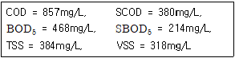
- 24.68
- 32.56
- 40.12
- 52.04
(정답률: 46%)
4. 이상적 완전혼합형 반응조내 흐름(혼합)에 관한 설명으로 틀린 것은?
- 분산수(dispersion number)가 0에 가까울수록 완전혼합 흐름상태라 할 수 있다.
- Morrill지수의 값이 클수록 이상적인 완전혼합 흐름상태에 가깝다.
- 분산(Variance)이 1일 때 완전혼합 흐름상태라 할 수 있다.
- 지체시간(lag time)이 0이다.
(정답률: 72%)
5. 건조고형물량이 3000kg/day인 생슬러지를 저율혐기성소화조로 처리할 때 휘발성고형물은 건조고형물의 70%이고 휘발성고형물의 60%는 소화에 의해 분해된다. 소화된 슬러지의 총고형물 량(kg/day)은?
- 1040
- 1740
- 2040
- 2440
(정답률: 70%)
6. 글루코스(C6H12O6) 100mg/L인 용액을 호기성 처리할 때 이론적으로 필요한 질소량(mg/L)은? (단, K1(상용대수) = 0.1/day, BOD5 : N = 100 : 5, BODU = ThOD로 가정)
- 약 3.7
- 약 4.2
- 약 5.3
- 약 6.9
(정답률: 58%)
7. Formaldehyde(CH2O) 500mg/L의 이론적 COD값(mg/L)은?
- 약 512
- 약 533
- 약 553
- 약 576
(정답률: 70%)
8. 담수와 해수에 대한 일반적인 설명으로 틀린 것은?
- 해수의 용존산소 포화도는 주로 염류 때문에 담수보다 작다.
- upwelling은 담수가 해수의 표면으로 상승하는 현상이다.
- 해수의 주성분으로는 Cl-, Na+, SO42- 등이 있다.
- 하구에서는 담수와 해수가 쐐기 형상으로 교차한다.
(정답률: 79%)
9. 하천의 길이가 500km이며, 유속은 56m/min 이다. 상류지점의 BODu가 280ppm 이라면, 상류지점에서부터 378km 되는 하류지점의 BOD(mg/L)는? (단, 상용대수기준, 탈산소계수는 0.1/day, 수온은 20°C, 기타조건은 고려하지 않음)
- 45
- 68
- 95
- 132
(정답률: 50%)
10. 3g의 아세트산(CH3COOH)을 증류수에 녹여 1L로 하였을 때 수소이온 농도(mol/L)는? (단, 이온화 상수값 = 1.75×10-5)
- 6.3×10-4
- 6.3×10-5
- 9.3×10-4
- 9.3×10-5
(정답률: 65%)
11. 소수성 콜로이드의 특성으로 틀린 것은?
- 물과 반발하는 성질을 가진다.
- 물속에 현탁상태로 존재한다.
- 아주 작은 입자로 존재한다.
- 염에 큰 영향을 받지 않는다.
(정답률: 82%)
12. 연속류 교반 반응조(CFSTR)에 관한 내용으로 틀린 것은?
- 충격부하에 강하다.
- 부하변동에 강하다.
- 유입된 액체의 일부분은 즉시 유출된다.
- 동일 용량 PFR에 비해 제거효율이 좋다.
(정답률: 78%)
13. 수중에서 유기질소가 유입되었을 때 유기질소는 미생물에 의하여 여러 단계를 거치면서 변화된다. 정상적으로 변화되는 과정에서 가장 적은 양으로 존재하는 것은?
- 유기질소
- NO2-
- NO3-
- NH4+
(정답률: 67%)
14. 오염된 지하수를 복원하는 방법 중 오염물질의 유발요인이 한 지점에 집중적이고 오염된 면적이 비교적 작을 때 적용할 수 있는 적합한 방법은?
- 현장공기추출법
- 유해물질 굴착제거법
- 오염된 지하수의 양수처리법
- 토양 내 미생물을 이용한 처리법
(정답률: 75%)
15. 분체 증식을 하는 미생물을 회분 배양하는 경우 미생물은 시간에 따라 5단계를 거치게 된다. 5단계 중 생존한 미생물의 중량보다 미생물 원형질의 전체 중량이 더 크게 되며, 미생물수가 최대가 되는 단계로 가장 적합한 것은?
- 증식단계
- 대수성장단계
- 감소성장단계
- 내생성장단계
(정답률: 73%)
16. 다음 유기물 1M이 완전산화될 때 이론적인 산소요구량(ThOD)이 가장 적은 것은?
- C6H6
- C6H12O6
- C2H5OH
- CH3COOH
(정답률: 72%)
17. 농도가 A인 기질을 제거하기 위한 반응조를 설계하려고 한다. 요구되는 기질의 전환율이 90%일 경우에 회분식 반응조에서의 체류시간(hr)은? (단, 반응은 1차 반응(자연대수기준)이며, 반응상수 K = 0.45 /hr)
- 5.12
- 6.58
- 13.16
- 19.74
(정답률: 60%)
18. 생물농축에 대한 설명으로 가장 거리가 먼 것은?
- 생물농축은 생태계에서 영양단계가 낮을수록 현저하게 나타난다.
- 독성물질 뿐 아니라 영양물질도 똑같이 물질 순환을 통해 축적될 수 있다.
- 생물체내의 오염물질 농도는 환경수중의 농도보다 일반적으로 높다.
- 생물체는 서식장소에 존재하는 물질의 필요 유무에 관계없이 섭취한다.
(정답률: 72%)
19. 해수의 HOLY SEVEN에서 가장 농도가 낮은 것은?
- CI-
- Mg2+
- Ca2+
- HCO3-
(정답률: 75%)
20. 하천의 자정단계와 오염의 정도를 파악하는 Whipple의 자정단계(지대별 구분)에 대한 설명으로 틀린 것은?
- 분해지대 : 유기성 부유물의 침전과 환원 및 분해에 의한 탄산가스의 방출이 일어난다.
- 분해지대 : 용존산소의 감소가 현저하다.
- 활발한 분해지대 : 수중환경은 혐기성상태가 되어 침전저니는 흑갈색 또는 황색을 띤다.
- 활발한 분해지대 : 오염에 강한 실지렁이가 나타나고 혐기성 곰팡이가 증식한다.
(정답률: 73%)
2과목: 상하수도계획
21. 다음 중 생물막법과 가장 거리가 먼 것은?
- 살수여상법
- 회전원판법
- 접촉산화법
- 산화구법
(정답률: 59%)
22. 취수보의 위치와 구조 결정 시 고려할 사항으로 적절하지 않은 것은?
- 유심이 취수구에 가까우며, 홍수에 의한 하상변화가 적은 지점으로 한다.
- 홍수의 유심방향과 직각의 직선형으로 가능한 한 하천의 직선부에 설치한다.
- 고정보의 상단 또는 가동보의 상단 높이는 유하단면 내에 설치한다.
- 원칙적으로 철근콘크리트구조로 한다.
(정답률: 52%)
23. 하수의 배제방식 중 합류식에 관한 설명으로 틀린 것은?
- 관거내의 보수 : 폐쇄의 염려가 없다.
- 토지이용 : 기존의 측구를 폐지할 경우는 도로폭을 유효하게 이용할 수 있다.
- 관거오접 : 철저한 감시가 필요하다.
- 시공 : 대구경관거가 되면 좁은 도로에서의 매설에 어려움이 있다.
(정답률: 63%)
24. 취수탑의 위치에 관한 내용으로 ( )에 옳은 것은?
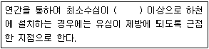
- 1m
- 2m
- 3m
- 4m
(정답률: 71%)
25. 펌프의 캐비테이션이 발생하는 것을 방지하기 위한 대책으로 잘못된 것은?
- 펌프의 설치위치를 가능한 낮추어 가용유효흡입수두를 크게 한다.
- 흡입관의 손실을 가능한 작게 하여 가용유효흡입수두를 크게 한다.
- 펌프의 회전속도를 높게 선정하여 필요유효흡입수두를 크게 한다.
- 흡입측 밸브를 완전히 개방하고 펌프를 운전한다.
(정답률: 72%)
26. 양정변화에 대하여 수량의 변동이 적고 또 수량변동에 대하여 동력의 변화도 적으므로 우수용 펌프 등 수위변동이 큰 곳에 적합한 펌프는?
- 원심펌프
- 사류펌프
- 축류펌프
- 스크류펌프
(정답률: 56%)
27. 상수시설 중 배수시설을 설계하고 정비할 때에 설계상의 기본적인 사항 중 옳은 것은?
- 배수지의 용량은 시간변동조정용량, 비상시대처용량, 소화용수량 등을 고려하여 계획시간최대급수량의 24시간 분 이상을 표준으로 한다.
- 배수관을 계획할 때에 지역의 특성과 상황에 따라 직결급수의 범위를 확대하는 것 등을 고려하여 최대정수압을 결정하며, 수압의 기준점은 시설물의 최고높이로 한다.
- 배수본관은 단순한 수지상 배관으로 하지 말고 가능한 한 상호 연결된 관망형태로 구성한다.
- 배수지관의 경우 급수관을 분기하는 지점에서 배수관내의 최대정수압은 150kPa을 넘지 않도록 한다.
(정답률: 42%)
28. 하수도 계획에 대한 설명으로 옳은 것은?
- 하수도 계획의 목표연도는 원칙적으로 30년으로 한다.
- 하수도 계획구역은 행정상의 경계구역을 중심으로 수립한다.
- 새로운 시가지의 개발에 따른 하수도계획구역은 기존시가지를 포함한 종합적인 하수도계획의 일환으로 수립한다.
- 하수처리구역의 경계는 자연유하에 의한 하수배제를 위해 배수구역 경계와 교차하도록 한다.
(정답률: 54%)
29. 펌프의 토출량이 1200m3/hr, 흡입구의 유속이 2.0m/sec인 경우 펌프의 흡입구경(mm)은?
- 약 262
- 약 362
- 약 462
- 약 562
(정답률: 57%)
30. 고도정수 처리 시 해당물질의 처리방법으로 가장 거리가 먼 것은?
- pH가 낮은 경우에는 플록형성 후에 알칼리제를 주입하여 pH를 조정한다.
- 색도가 높을 경우에는 응집침전처리, 활성탄처리 또는 오존처리를 한다.
- 음이온 계면활성제를 다량 함유한 경우에는 응집 또는 염소처리를 한다.
- 원수 중에 불소가 과량으로 포함된 경우에는 응집처리, 활성알루미나, 골탄, 전해 등의 처리를 한다.
(정답률: 54%)
31. 상수도 수요량 산정 시 불필요한 항목은?
- 계획1인1일 최대사용량
- 계획1인1일 평균급수량
- 계획1인1일 최대급수량
- 계획1인당 시간최대급수량
(정답률: 47%)
32. 정수시설인 배수지에 관한 내용으로 ( )에 옳은 내용은?
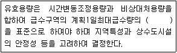
- 4시간분 이상
- 8시간분 이상
- 12시간분 이상
- 24시간분 이상
(정답률: 69%)
33. 계획우수량을 정할 때 고려하여야 할 사항 중 틀린 것은?
- 하수관거의 확률년수는 원칙적으로 10~30년으로 한다.
- 유입시간은 최소단위배수구의 지표면특성을 고려하여 구한다.
- 유출계수는 지형도를 기초로 답사를 통하여 충분히 조사하고 장래 개발계획을 고려하여 구한다.
- 유하시간은 최상류관거의 끝으로부터 하류관거의 어떤 지점까지의 거리를 계획유량에 대응한 유속으로 나누어 구하는 것을 원칙으로 한다.
(정답률: 53%)
34. I = 3660/(t+15) mm/hr, 면적 3.0km2, 유입시간 6분, 유출계수 C = 0.65, 관내유속이 1m/sec인 경우 관 길이 600m인 하수관에서 흘러나오는 우수량(m3/sec)은? (단, 합리식 적용)
- 64
- 76
- 82
- 91
(정답률: 53%)
35. 취수구 시설에서 스크린, 수문 또는 수위조절판(Stop log)을 설치하여 일체가 되어 작동하게 되는 취수시설은?
- 취수보
- 취수탑
- 취수문
- 취수관거
(정답률: 63%)
36. 활성슬러지법에서 사용하는 수중형 포기장치에 관한 설명으로 틀린 것은?
- 저속터빈과 압력튜브 혹은 보통관을 통한 압축공기를 주입하는 형식이다.
- 혼합정도가 좋으며 단위용량당주입량이 크다.
- 깊은 반응조에 적용하며 운전에 융통성이 있다.
- 송풍조의 규모를 줄일 수 있어 전기료가 적게 소요된다.
(정답률: 62%)
37. 정수시설인 착수정의 용량기준으로 적절한 것은?
- 체류시간 : 0.5분 이상, 수심 : 2~4m 정도
- 체류시간 : 1.0분 이상, 수심 : 2~4m 정도
- 체류시간 : 1.5분 이상, 수심 : 3~5m 정도
- 체류시간 : 1.0분 이상, 수심 : 3~5m 정도
(정답률: 68%)
38. 막여과시설에서 막모듈의 열화에 대한 내용으로 틀린 것은?
- 미생물과 막 재질의 자화 또는 분비물의 작용에 의한 변화
- 산화제에 의하여 막 재질의 특성변화나 분해
- 건조되거나 수축으로 인한 막 구조의 비가역적인 변화
- 응집제 투입에 따른 막모듈의 공급유로가 고형물로 폐색
(정답률: 62%)
39. 정수시설인 하니콤방식에 관한 설명으로 틀린 것은? (단, 회전원판방식과 비교 기준)
- 체류시간 : 2시간 정도
- 손실수두 : 거의 없음
- 폭기설비 : 필요 없음
- 처리수조의 깊이 : 5~7m
(정답률: 49%)
40. 면적이 3km2이고, 유입시간이 5분, 유출계수 C = 0.65, 관내 유속 1m/sec로 관 길이 1200m인 하수관으로 우수가 흐르는 경우 유달시간(분)은?
- 10
- 15
- 20
- 25
(정답률: 49%)
3과목: 수질오염방지기술
41. 생물막을 이용한 하수처리방식인 접촉산화법의 설명으로 틀린 것은?
- 분해속도가 낮은 기질제거에 효과적이다.
- 난분해성물질 및 유해물질에 대한 내성이 높다.
- 고부하시에도 매체의 공극으로 인하여 폐쇄위험이 적다.
- 매체에 생성되는 생물량은 부하조건에 의하여 결정된다.
(정답률: 60%)
42. 표면적이 2m2이고 깊이가 2m인 침전지에 유량 48m3/day의 폐수가 유입될 때 폐수의 체류시간(hr)은?
- 2
- 4
- 6
- 8
(정답률: 57%)
43. 혐기성 소화조 설계 시 고려해야 할 사항과 관계가 먼 것은?
- 소요산소량
- 슬러지 소화정도
- 슬러지 소화를 위한 온도
- 소화조에 주입되는 슬러지의 양과 특성
(정답률: 59%)
44. 하수관거가 매설되어 있지 않은 지역에 위치한 500개의 단독주택(정화조 설치)에서 생성된 정화조 슬러지를 소규모 하수처리장에 운반하여 처리할 경우, 이로 인한 BOD 부하량증가율(질량기준, 유입일 기준, %)은?
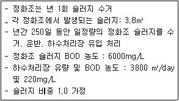
- 약 3.5
- 약 5.5
- 약 7.5
- 약 9.5
(정답률: 35%)
45. 상수처리를 위한 사각 침전조에 유입되는 유량은 30000m3/day이고 표면부하율은 24m3/m2·day이며 체류시간은 6시간이다. 침전조의 길이와 폭의 비는 2 : 1이라면 조의 크기는?
- 폭 : 20m, 길이 : 40m, 깊이 : 6m
- 폭 : 20m, 길이 : 40m, 깊이 : 4m
- 폭 : 25m, 길이 : 50m, 깊이 : 6m
- 폭 : 25m, 길이 : 50m, 깊이 : 4m
(정답률: 57%)
46. 슬러지 내 고형물 무게의 1/3이 유기물질, 2/3가 무기물질이며, 이 슬러지 함수율은 80%, 유기물질 비중이 1.0, 무기물질 비중은 2.5라면 슬러지 전체의 비중은?
- 1.072
- 1.087
- 1.095
- 1.112
(정답률: 43%)
47. 정수장의 침전조 설계 시 어려운 점은 물의 흐름은 수평방향이고 입자 침강방향은 중력방향이어서 두 방향의 운동을 해석해야 한다는 점이다. 이상적인 수평 흐름 장방형 침전지(제Ⅰ형 침전)설계를 위한 기본 가정 중 틀린 것은?
- 유입부의 깊이에 따라 SS농도는 선형으로 높아진다.
- 슬러지 영역에서는 유체이동이 전혀 없다.
- 슬러지 영역상부에 사영역이나 단락류가 없다.
- 플러그 흐름이다.
(정답률: 53%)
48. 염소이온 농도가 500mg/L, BOD 2000mg/L인 폐수를 희석하여 활성슬러지법으로 처리한 결과 염소이온 농도와 BOD는 각각 50mg/L 이었다. 이 때의 BOD 제거율(%)은? (단, 희석수의 BOD, 염소이온 농도는 0 이다.)
- 85
- 80
- 75
- 70
(정답률: 47%)
49. 생물학적 방법을 이용하여 하수내 인과 질소를 동시에 효과적으로 제거할 수 있다고 알려진 공법과 가장 거리가 먼 것은?
- A2/O 공법
- 5단계 Bardenpho 공법
- Phostrip 공법
- SBR 공법
(정답률: 59%)
50. 미생물을 이용하여 폐수에 포함된 오염물질인 유기물, 질소, 인을 동시에 처리하는 공법은 대체로 혐기조, 무산소조, 포기조로 구성되어 있다. 이 중 혐기조에서의 주된 생물학적 오염물질 제거반응은?
- 인 방출
- 인 과잉흡수
- 질산화
- 탈질화
(정답률: 59%)
51. 막공법에 관한 설명으로 가장 거리가 먼 것은?
- 투석은 선택적 투과막을 통해 용액 중에 다른 이온, 혹은 분자 크기가 다른 용질을 분리시키는 것이다.
- 투석에 대한 추진력은 막을 기준으로 한 용질의 농도차이다.
- 한외여과 및 미여과의 분리는 주로 여과작용에 의한 것으로 역삼투현상에 의한 것이 아니다.
- 역삼투는 반투막으로 용매를 통과시키기 위해 동수압을 이용한다.
(정답률: 63%)
52. 폐수를 처리하기 위해 시료 200mL를 취하여 Jar Test하여 응집제와 응집보조제의 최적주입농도를 구한 결과, Al2(SO4)3 200mg/L, Ca(OH)2 500mg/L였다. 폐수량 500m3/day을 처리하는데 필요한 Al2(SO4)3의 양(kg/day)은?
- 50
- 100
- 150
- 200
(정답률: 46%)
53. 유량이 500m3/day, SS 농도가 220mg/L인 하수가 체류시간이 2시간인 최초침전지에서 60%의 제거효율을 보였다. 이 때 발생되는 슬러지 양(m3/day)은? (단, 슬러지 비중은 1.0, 함수율은 98%, SS만 고려함)
- 약 4.2
- 약 3.3
- 약 2.4
- 약 1.8
(정답률: 41%)
54. 정수장에서 사용하는 소독제의 특성과 가장 거리가 먼 것은?
- 미잔류성
- 저렴한 가격
- 주입조작 및 취급이 쉬울 것
- 병원성 미생물에 대한 효과적 살균
(정답률: 58%)
55. 직사각형 급속여과지의 설계조건이 다음과 같을 때, 필요한 급속여과지의 수(개)는? (단, 설계조건 : 유량 30000m3/day, 여과속도 120m/day, 여과지 1지의 길이 10m, 폭 7m, 기타 조건은 고려하지 않음)
- 2
- 4
- 6
- 8
(정답률: 51%)
56. 만일 혐기성 처리공정에서 제거된 1kg의 용해성 COD가 혐기성 미생물 0.15kg의 순생산을 나타낸다면 표준상태에서의 이론적인 메탄생성 부피(m2)는?
- 0.3
- 0.4
- 0.5
- 0.6
(정답률: 25%)
57. 직경이 다른 두개의 원형입자를 동시에 20°C의 물에 떨어 뜨려 침강실험을 했다. 입자 A의 직경은 2×10-2cm이며 입자 B의 직경은 5×10-2cm라면 입자 A와 입자 B의 침강속도의 비율(VA/VB)은? (단, 입자 A와 B의 비중은 같으며, stokes 공식을 적용, 기타 조건은 같음)
- 0.28
- 0.23
- 0.16
- 0.12
(정답률: 54%)
58. 물속의 휘발성유기화합물(VOC)을 에어스트리핑으로 제거할 때 제거 효율관계를 설명한 것으로 옳지 않은 것은?
- 액체 중의 VOC농도가 높을수록 효율이 증가한다.
- 오염되지 않은 공기를 주입할 때 제거효율은 증가한다.
- KLa가 감소하면 효율이 증가한다.
- 온도가 상승하면 효율이 증가한다.
(정답률: 61%)
59. 하수 내 함유된 유기물질뿐 아니라 영양물질까지 제거하기 위하여 개발된 A2/O공법에 관한 설명으로 틀린 것은?
- 인과 질소를 동시에 제거할 수 있다.
- 혐기조에서는 인의 방출이 일어난다.
- 폐슬러지 내의 인함량은 비교적 높아서 (3~5%) 비료의 가치가 있다.
- 무산소조에서는 인의 과잉섭취가 일어난다.
(정답률: 59%)
60. 폐수 처리시설에서 직경 0.01cm, 비중 2.5인 입자를 중력 침강시켜 제거하고자 한다. 수온 4.0°C에서 물의 비중은 1.0, 점성계수는 1.31×10-2g/cm·sec일 때, 입자의 침강속도(m/hr)는? (단, 입자의 침강속도는 Stokes 식에 따른다.)
- 12.2
- 22.4
- 31.6
- 37.6
(정답률: 43%)
4과목: 수질오염공정시험기준
61. 수질오염공정시험기준의 구리시험법(원자흡수분광광도법)에서 사용하는 조연성 가스는?
- 수소
- 아르곤
- 아산화질소
- 아세틸렌 공기
(정답률: 43%)
62. 수질오염공정시험기준에서 아질산성 질소를 자외선/가시선 분광법으로 측정하는 흡광도 파장(nm)은?
- 540
- 620
- 650
- 690
(정답률: 50%)
63. 식물성 플랑크톤 시험 방법으로 옳은 것은? (단, 수질오염공정시험기준 기준)
- 현미경계수법
- 최적확수법
- 평판집락계수법
- 시험관정량법
(정답률: 61%)
64. 웨어의 수두가 0.25m, 수로의 폭이 0.8m, 수로의 밑면에서 절단 하부점까지의 높이가 0.7m인 직각 3각웨어의 유량(m3/min)은? (단, 유량계수
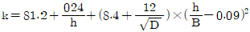
)- 1.4
- 2.1
- 2.6
- 2.9
(정답률: 46%)
65. 기체크로마토그래피에 사용되는 운반기체 중 분리도가 큰 순서대로 나타낸 것은?
- N2 ＞ He ＞ H2
- He ＞ H2 ＞ N2
- N2 ＞ H2 ＞ He
- H2 ＞ He ＞ N2
(정답률: 44%)
66. 폐수의 BOD를 측정하기 위하여 다음과 같은 자료를 얻었다. 이 폐수의 BOD(mg/L)는? (단, F = 1.0)
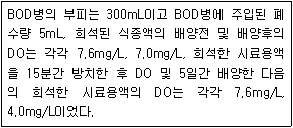
- 180
- 216
- 246
- 270
(정답률: 31%)
67. 유량이 유체의 탁도, 점성, 온도의 영향은 받지 않고, 유속에 의해 결정되며 손실수두가 적은 유량계는?
- 피토우관
- 오리피스
- 벤튜리미터
- 자기식 유량측정기
(정답률: 51%)
68. 윙클러 법으로 용존산소를 측정할 때 0.025N 티오황산나트륨 용액 5mL에 해당되는 용존산소량(mg)은?
- 0.02
- 0.20
- 1.00
- 5.00
(정답률: 31%)
69. 수질오염공정시험기준상 양극벗김전압전류법으로 측정하는 금속은?
- 구리
- 납
- 니켈
- 카드뮴
(정답률: 44%)
70. 클로로필 a 량을 계산할 때 클로로필 색소를 추출하여 흡광도를 측정한다. 이 때 색소추출에 사용하는 용액은?
- 아세톤용액
- 클로로포름용액
- 에탄올용액
- 포르말린용액
(정답률: 40%)
71. 최적응집제 주입량을 결정하는 실험을 하려고 한다. 다음 중 실험에 반드시 필요한 것이 아닌 것은?
- 비이커
- pH 완충용액
- Jar Tester
- 시계
(정답률: 51%)
72. 질산성 질소의 정량시험 방법 중 정량범위가 0.1mg NO3-N/L가 아닌 것은?
- 이온크로마토그래피법
- 자외선/가시선 분광법(부루신법)
- 자외선/가시선 분광법(활성탄흡착법)
- 데발다합금 환원증류법(분광법)
(정답률: 46%)
73. 전기전도도의 측정에 관한 설명으로 잘못된 것은?
- 온도차에 의한 영향은 ±5%/°C정도이며 측정결과값의 통일을 위하여 보정하여야 한다.
- 측정단위는 uS/cm로 한다.
- 전기전도도는 용액이 전류를 운반할 수 있는 정도를 말한다.
- 전기전도도 셀은 항상 수중에 잠긴 상태에서 보존하여야 하며, 정기적으로 점검한 후 사용한다.
(정답률: 44%)
74. 시료 전처리 방법 중 중금속 측정을 위한 용매 추출법인 피로디딘 디티오카르바민산 암모늄추출법에 관한 설명으로 알맞지 않은 것은?
- 크롬은 3가크롬과 6가크롬 상태로 존재할 경우에 추출된다.
- 망간을 측정하기 위해 전처리한 경우는 망간착화합물의 불안전성 때문에 추출 즉시 측정하여야 한다.
- 철의 농도가 높은 경우에는 다른 금속추출에 방해를 줄수 있다.
- 시료 중 구리, 아연, 납, 카드뮴, 니켈, 코발트 및 은 등의 측정에 적용된다.
(정답률: 47%)
75. 벤튜리미터(Venturi Meter)의 유량 측정공식,
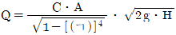
에서 ( ㄱ )에 들어갈 내용으로 옳은 것은? (단, Q = 유량(cm3/sec), C = 유량계수, A = 목 부분의 단면적(cm2), g= 중력가속도(980cm/sec2), H = 수두차(cm))- 유입부의 직경 / 목(throat)부의 직경
- 목(throat)부의 직경 / 유입부의 직경
- 유입부 관 중심부에서의 수두 / 목(throat)부의 수두
- 목(throat)부의 수두 / 유입부 관 중심부에서의 수두
(정답률: 54%)
76. 램버트-비어(Lambert-Beer)의 법칙에서 흡광도의 의미는? (단, Io = 입사광의 강도, It = 투사광의 강도, t = 투과도)
- It/Io
- t × 100
- log(1/t)
- It × 10-1
(정답률: 61%)
77. 백분율(W/V, %)의 설명으로 옳은 것은?
- 용액 100g 중의 성분무게(g)를 표시
- 용액 100mL 중의 성분용량(mL)을 표시
- 용액 100mL 중의 성분무게(g)를 표시
- 용액 100g 중의 성분용량(mL)을 표시
(정답률: 62%)
78. 수질측정기기 중에서 현장에서 즉시 측정하기 위한 것이 아닌 것은?
- DO meter
- pH meter
- TOC meter
- Thermometer
(정답률: 55%)
79. 하천의 일정장소에서 시료를 채수하고자 한다. 그 단면의 수심이 2m미만 일 때 채수 위치는 수면으로부터 수심의 어느 위치인가?
- 1/2 지점
- 1/3 지점
- 1/3 지점과 2/3 지점
- 수면상과 1/2 지점
(정답률: 49%)
80. 물벼룩을 이용한 급성 독성 시험법에서 사용하는 용어의 정의로 옳지 않은 것은?
- 치사 : 일정 비율로 준비된 시료에 물벼룩을 투입하고 12시간 경과 후 시험용기를 살며시 움직여주고, 30초 후 관찰했을 때 아무 반응이 없는 경우를 판정한다.
- 유영저해 : 독성물질에 의해 영향을 받아 일부 기관(촉각, 후복부 등)이 움직임이 없을 경우를 판정한다.
- 표준독성물질 : 독성시험이 정상적인 조건에서 수행되는지를 주기적으로 확인하기 위하여 사용하며 다이크롬산포타슘을 이용한다.
- 지수식 시험방법 : 시험기간 중 시험용액을 교환하지 않는 시험을 말한다.
(정답률: 57%)
5과목: 수질환경관계법규
81. 환경기준인 수질 및 수생태계 상태별 생물학적 특성이해표 내용 중 생물등급이 '좋음~보통'일 때의 생물지표종(어류)으로 틀린 것은?
- 버들치
- 쉬리
- 갈겨니
- 은어
(정답률: 52%)
82. 오염총량관리 조사·연구반에 관한 내용으로 ( )에 옳은 내용은?
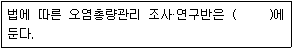
- 유역환경청
- 한국환경공단
- 국립환경과학원
- 수질환경 원격조사센터
(정답률: 44%)
83. 특례지역에 위치한 폐수시설의 부유물질량 배출허용기준(mg/L 이하)은? (단, 1일 폐수배출량 1000 세제곱미터)
- 30
- 40
- 50
- 60
(정답률: 34%)
84. 사업장의 규모별 구분에 관한 설명으로 틀린 것은?
- 1일 폐수배출량이 1000m3인 사업장은 제2종 사업장에 해당된다.
- 1일 폐수배출량이 100m3인 사업장은 제4종 사업장에 해당된다.
- 폐수배출량은 최근 90일 중 가장 많이 배출한 날을 기준으로 한다.
- 최초 배출시설 설치허가시의 폐수배출량은 사업계획에 따른 예상용수사용량을 기준으로 산정한다.
(정답률: 45%)
85. 기본배출부과금과 초과배출부과금에 공통적으로 부과대상이 되는 수질오염물질은?
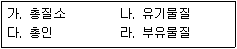
- 가, 나, 다, 라
- 가, 나
- 나, 라
- 가, 다
(정답률: 43%)
86. 공공수역의 수질보전을 위하여 환경부령이 정하는 휴경 등 권고대상 농경지의 해발고도 및 경사도 기준으로 옳은 것은?
- 해발 400m, 경사도 15%
- 해발 400m, 경사도 30%
- 해발 800m, 경사도 15%
- 해발 800m, 경사도 30%
(정답률: 58%)
87. 비점오염원 관리지역에 대한 관리대책을 수립할 때 포함될 사항으로 가장 거리가 먼 것은?
- 관리목표
- 관리대상 수질오염물질의 종류
- 관리대상 수질오염물질의 분석방법
- 관리대상 수질오염물질의 저감 방안
(정답률: 42%)
88. 수질환경기준(하천) 중 사람의 건강보호를 위한 전수역에서 각 성분별 환경기준으로 맞는 것은?
- 비소(As) : 0.1mg/L 이하
- 납(Pb) : 0.01mg/L 이하
- 6가 크롬(Cr+6) : 0.⑤mg/L 이하
- 음이온계면활성제(ABS) : 0.01mg/L 이하
(정답률: 53%)
89. 비점오염방지시설의 시설유형별 기준에서 장치형 시설이 아닌 것은?
- 침투 시설
- 여과형 시설
- 스크린형 시설
- 소용돌이형 시설
(정답률: 57%)
90. 환경기술인 또는 기술요원 등의 교육에 관한 설명 중 틀린 것은?
- 환경기술인이 이수하여야 할 교육과정은 환경기술인과정, 폐수처리기술요원과정이다.
- 교육기간은 5일 이내로 하며, 정보통신매체를 이용한 원격교육도 5일 이내로 한다.
- 환경기술인은 1년 이내에 최초교육과 최초교육 후 3년마다 보수교육을 이수하여야 한다.
- 교육기관에서 작성한 교육계획에는 교재편찬계획 및 교육성적의 평가방법 등이 포함되어야 한다.
(정답률: 49%)
91. 배출시설에서 배출되는 수질오염물질을 방지시설에 유입하지 아니하고 배출한 경우(폐수무방류 배출시설의 설치허가 또는 변경허가를 받은 사업자는 제외)에 대한 벌칙 기준은?
- 2년 이하의 징역 또는 2천만원 이하의 벌금
- 3년 이하의 징역 또는 3천만원 이하의 벌금
- 5년 이하의 징역 또는 5천만원 이하의 벌금
- 7년 이하의 징역 또는 7천만원 이하의 벌금
(정답률: 39%)
92. 물환경보전법령상 "호소"에 관한 설명으로 틀린 것은?
- 댐·보 또는 둑(「사방사업법」 에 따른 사방시설은 제외한다.) 등을 쌓아 하천 또는 계곡에 흐르는 물을 가두어 놓은 곳
- 화산활동 등으로 인하여 함몰된 지역에 물이 가두어진 곳
- 댐의 갈수위를 기준으로 구역 내 가두어진 곳
- 하천에 흐르는 물이 자연적으로 가두어진 곳
(정답률: 41%)
93. 1000000m3/day이상의 하수를 처리하는 공공하수처리시설에 적용되는 방류수의 수질기준 중에서 가장 기준(농도)이 낮은 검사항목은?
- 총질소
- 총인
- SS
- BOD
(정답률: 46%)
94. 사업장에서 배출되는 폐수에 대한 설명 중 위탁처리를 할 수 없는 폐수는?
- 해양환경관리법상 지정된 폐기물 배출해역에 배출하는 폐수
- 폐수배출시설의 설치를 제한할 수 있는 지역에서 1일 50세제곱미터 미만으로 배출되는 폐수
- 아파트형공장에서 고정된 관망을 이용하여 이송처리하는 폐수(폐수량에 제한을 받지 않는다.)
- 성상이 다른 폐수가 수질오염방지시설에 유입될 경우 처리가 어려운 폐수로써 1일 50세제곱미터 미만으로 배출되는 폐수
(정답률: 30%)
95. 폐수무방류배출시설의 세부 설치기준으로 틀린 것은?
- 특별대책지역에 설치되는 경우 폐수배출량이 200m3/day 이상이면 실시간 확인 가능한 원격유량감시장치를 설치하여야 한다.
- 폐수는 고정된 관로를 통하여 수집·이송·처리·저장되어야 한다.
- 특별대책지역에 설치되는 시설이 1일 24시간 연속하여 가동되는 것이면 배출폐수를 전량 처리할 수 있는 예비방지시설을 설치하여야 한다.
- 폐수를 고체 상태의 폐기물로 처리하기 위하여 증발·농축·건조·탈수 또는 소각시설을 설치하여야 하며, 탈수 등 방지시설에서 발생하는 폐수가 방지시설에 재유입되지 않도록 하여야 한다.
(정답률: 44%)
96. 다음은 배출시설의 설치허가를 받은 자가 배출시설의 변경허가를 받아야 하는 경우에 대한 기준이다. ( )에 들어갈 내용으로 옳은 것은?
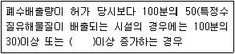
- 1일 500세제곱미터
- 1일 600세제곱미터
- 1일 700세제곱미터
- 1일 800세 제곱미터
(정답률: 50%)
97. 기술진단에 관한 설명으로 ( )에 알맞은 것은?
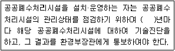
- 1
- 5
- 10
- 15
(정답률: 32%)
98. 오염총량관리 기본방침에 포함되어야 하는 사항으로 거리가 먼 것은?
- 오염총량관리 대상지역의 수생태계 현황 조사 및 수생태계 건강성 평가 계획
- 오염원의 조사 및 오염부하량 산정방법
- 오염총량관리의 대상 수질오염물질 종류
- 오염총량관리의 목표
(정답률: 44%)
99. 공공폐수처리시설의 관리·운영자가 처리시설의 적정운영 여부 확인을 위한 방류수 수질검사 실시기준으로 옳은 것은? (단, 시설규모는 1000m3/day 이며, 수질은 현저히 악화되지 않았음)
- 방류수 수질검사 월 2회 이상
- 방류수 수질검사 월 1회 이상
- 방류수 수질검사 매분기 1회 이상
- 방류수 수질검사 매반기 1회 이상
(정답률: 49%)
100. 수질오염경보 중 수질오염감시경보 대상 항목이 아닌 것은?
- 용존산소
- 전기전도도
- 부유물질
- 총유기탄소
(정답률: 40%)